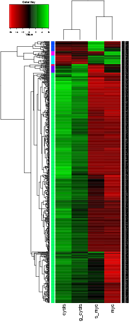
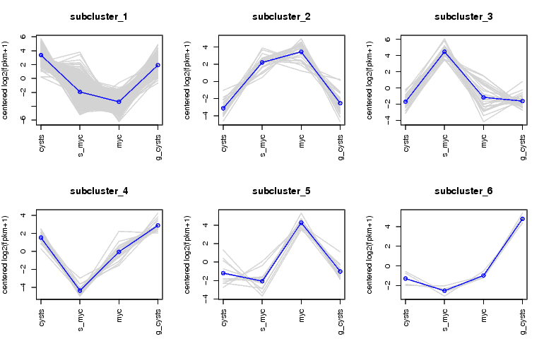
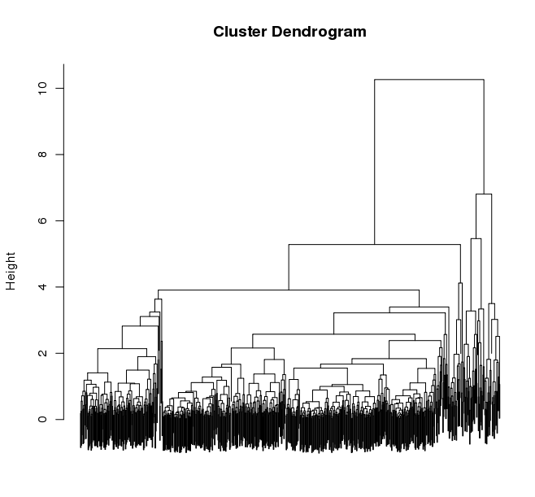
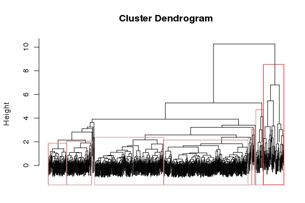

Our current system for identifying differentially expressed transcripts relies on using the EdgeR Bioconductor package. We have a protocol and scripts described below for identifying differentially expressed transcripts and clustering transcripts according to expression profiles. This process is somewhat interactive, and described are automated approaches as well as manual approaches to refining gene clusters and examining their corresponding expression patterns.
We recommend generating a single Trinity assembly based on combining all reads across all samples as inputs. Then, reads are separately aligned back to the single Trinity assembly for downstream analyses of differential expression, according to our abundance estimation protocol. If you decide to assemble each sample separately, then you’ll likely have difficulty comparing the results across the different samples due to differences in assembled transcript lengths and contiguity.
|
Note
|
If you have biological replicates, align each replicate set of reads and estimate abundance values for the Trinity contigs independently. |
Table of Contents
Generating Expression Value Matrices
First, join the RSEM-estimated abundance values for each of your samples by running the following, given transcript or gene-level abundance estimates from RSEM or eXpress:
$TRINITY_HOME/util/abundance_estimates_to_matrix.pl############################################################
#
# Usage: $TRINITY_HOME/util/abundance_estimates_to_matrix.pl --est_method <method> sample1.results sample2.results ...
# Required:
#
# --est_method <string> RSEM|eXpress (needs to know what format to expect)
#
#
# Options:
#
# --cross_sample_fpkm_norm <string> TMM|UpperQuartile|none (default: TMM)
#
# --name_sample_by_basedir name sample column by dirname instead of filename
#
# --out_prefix <string> default: 'matrix'
#
############################################################For example, given a set of RSEM isoform.results files for a set of samples (and naming them according to sample), the abundance matrix would be generated like so:
$TRINITY_HOME/util/abundance_estimates_to_matrix.pl --est_method RSEM --out_prefix Trinity_trans sampleA.RSEM.isoform.results \
sampleB.RSEM.isoform.results sampleC.isoform.results sampleD.isoform.results ...which will generate the following files:
Trinity_trans.counts.matrix : matrix of fragment raw counts
Trinity_trans.TMM.fpkm.matrix : TMM-normalized FPKM expression valuesDo the same for the RSEM gene files (where counts are aggregated per Trinity gene) like so:
$TRINITY_HOME/util/abundance_estimates_to_matrix.pl --est_method RSEM --out_prefix Trinity_genes sampleA.RSEM.gene.results \
sampleB.RSEM.gene.results sampleC.gene.results sampleD.gene.results ...and you’ll find similarly named files for the counts matrix and the TMM-normalized FPKM values, with the Trinity_genes prefix.
The counts matrix is used for differential expression analysis in Bioconductor (eg. edgeR). The TMM-normalized FPKM matrix is used for generating heatmaps and exploring patterns of gene expression. The TMM-normalization is performed using code in edgeR as described in Robinson and Oshlack, Genome Biology, 2010, and applied to scale the FPKM values provided by the abundance estimation software (RSEM or eXpress) across all samples.
Each downstream analysis tool will indicate which matrix type (counts or FPKM) is required.
|
Note
|
If you decide to edit the column headers (sample names), be sure that they are absolutely consistent across both matrix types. It’s easier to rename the input file used for building the matrix, since that filename becomes the corresponding column header. |
Identifying Differentially Expressed Transcripts
Trinity currently supports the use of Bioconductor tools (edgeR and DESeq) for differential expression analysis. To perform the steps below, you must have the R software installed along with certain libraries and packages shown below. To install Bioconductor and the required packages, run the following from an R prompt:
source("http://bioconductor.org/biocLite.R")
biocLite('edgeR')
biocLite('DESeq')
biocLite('ctc')
biocLite('Biobase')
install.packages('gplots’)
install.packages(‘ape’)Differentially expressed transcripts or genes are identified by running the script below, which will perform pairwise comparisons among each of your sample types. If you have biological replicates for each sample, you should indicate this as well (described further below). To analyze transcripts, use the transcripts.counts.matrix file. To perform an analysis at the gene level, use the genes.counts.matrix. Again, Trinity Components are used as a proxy for gene level studies.
$TRINITY_HOME/Analysis/DifferentialExpression/run_DE_analysis.pl#################################################################################################
#
# Required:
#
# --matrix <string> matrix of raw read counts (not normalized!)
#
# --method <string> edgeR|DESeq (DESeq only supported here w/ bio replicates)
#
#
# Optional:
#
# --samples_file <string> tab-delimited text file indicating biological replicate relationships.
# ex.
# cond_A cond_A_rep1
# cond_A cond_A_rep2
# cond_B cond_B_rep1
# cond_B cond_B_rep2
#
#
# General options:
#
# --min_rowSum_counts <int> default: 10 (only those rows of matrix meeting requirement will be tested)
#
# --output|o aname of directory to place outputs (default: $method.$pid.dir)
#
###############################################################################################
#
# ## EdgeR-related parameters
# ## (no biological replicates)
#
# --dispersion <float> edgeR dispersion value (default: 0.1) set to 0 for poisson (sometimes breaks...)
#
# http://www.bioconductor.org/packages/release/bioc/html/edgeR.html
#
###############################################################################################
#
# ## DE-Seq related parameters
#
# --DESEQ_method <string> "pooled", "pooled-CR", "per-condition", "blind"
# --DESEQ_sharingMode <string> "maximum", "fit-only", "gene-est-only"
# --DESEQ_fitType <string> fitType = c("parametric", "local")
#
# ## (no biological replicates)
# note: FIXED as: method=blind, sharingMode=fit-only
#
# http://www.bioconductor.org/packages/release/bioc/html/DESeq.html
#
################################################################################################|
Note
|
Based on our experiences with differential expression analysis and Trinity assemblies, we currently endorse edgeR as our method of choice. DESeq is known to perform quite well when many biological replicates are available for each sample type. We aim to support additional methods in future versions of Trinity. |
Identifying DE features: No biological replicates
Using edgeR without replicates:
$TRINITY_HOME/Analysis/DifferentialExpression/run_DE_analysis.pl --matrix counts.matrix --method edgeRIdentifying DE features: With biological replicates (PREFERRED)
Be sure to have a samples_described.txt file that describes the relationship between samples and replicates. For example:
conditionA condA-rep1
conditionA condA-rep2conditionB condB-rep1
conditionB condB-rep2conditionC condC-rep1
conditionC condC-rep2where condA-rep1, condA-rep2, condB-rep1, etc…, are all column names in the counts.matrix generated earlier (see top of page). Your sample names that group the replicates are user-defined here.
Using edgeR with replicates:
$TRINITY_HOME/Analysis/DifferentialExpression/run_DE_analysis.pl --matrix SP2.rnaseq.counts.matrix --method edgeR --samples_file samples_described.txt|
Note
|
A full example of the edgeR pipeline involving combining reads from multiple samples, assembling them using Trinity, separately aligning reads back to the trintiy assemblies, abundance estimation using RSEM, and differential expression analysis using edgeR is provided at: $TRINITY_HOME/sample_data/test_full_edgeR_pipeline |
Analyzing The Differentially Expressed Transcripts
Extracting and clustering differentially expressed transcripts
An initial step in analyzing differential expression is to extract those transcripts that are most differentially expressed (most significant P-values and fold-changes) and to cluster the transcripts according to their patterns of differential expression across the samples. To do this, you can run the following from within the edgeR output directory, bu running the following script:
$TRINITY_HOME/Analysis/DifferentialExpression/analyze_diff_expr.pl####################################################################################
#
# Required:
#
# --matrix matrix.normalized.FPKM
#
# Optional:
#
# -P p-value cutoff for FDR (default: 0.001)
#
# -C min abs(log2(a/b)) fold change (default: 2 (meaning 2^(2) or 4-fold).
#
# --output prefix for output file (default: "diffExpr.P${Pvalue}_C${C})
#
# Clustering methods:
#
# --gene_dist <string> euclidean, pearson, spearman, (default: euclidean)
# maximum, manhattan, canberra, binary, minkowski
#
# --gene_clust <string> ward, single, complete, average, mcquitty, median, centroid (default: complete)
#
#
#
####################################################################################For example:
$TRINITY_HOME/Analysis/DifferentialExpression/analyze_diff_expr.pl --matrix matrix.TMM_normalized.FPKM -P 1e-3 -C 2
The above is mostly just a visual reference. To more seriously study and define your gene clusters, you will need to interact with the data as described below. The clusters and all required data for interrogating and defining clusters is all saved with an R-session, locally with the file all.RData. This will be leveraged as described below.
Automatically Partitioning Genes into Expression Clusters
Run the script below to automatically split the data set into a sets of transcripts with related expression patterns by partitioning the hierarchically clustered transcript tree.
$TRINITY_HOME/Analysis/DifferentialExpression/define_clusters_by_cutting_tree.pl###################################################################################
#
# -K <int> define K clusters via k-means algorithm
#
# or, cut the hierarchical tree:
#
# --Ktree <int> cut tree into K clusters
#
# --Ptree <float> cut tree based on this percent of max(height) of tree
#
# -R <string> the filename for the store RData (file.all.RData)
#
###################################################################################For example:
$TRINITY_HOME/Analysis/DifferentialExpression/define_clusters_by_cutting_tree.pl --Ptree $percent_tree_heightA directory will be created called: diffExpr.P0.001_C2.matrix.R.all.RData.clusters_fixed_P_20/ and contain the expression matrix for each of the clusters (log2-transformed, median centered).
To plot the mean-centered expression patterns for each cluster, visit that directory and run:
$TRINITY_HOME/Analysis/DifferentialExpression/plot_expression_patterns.pl subcluster_*This will generate a summary image file: my_cluster_plots.pdf, as shown below:

Manually Defining Gene Clusters
Manually defining your clusters is the best way to organize the data to your liking. This is an interactive process. Fire up R from within your output directory, being sure it contains the all.RData file, and enter the following commands:
% R> load("all.RData") # check for your corresponding .RData file name to use here, replace all.RData accordingly> source("$TRINITY_HOME/Analysis/DifferentialExpression/R/manually_define_clusters.R")> manually_define_clusters(hc_genes, data)This should yield a display containing the hierarchically clustered genes, as shown below:

Now, manually define your clusters from left to right (order matters here, so you can decipher the results later!) by clicking on the branch vertical branch that defines the clade of interest. After clicking on the branch, it will be drawn with a red box around the selected clade, as shown below:

Right click with the mouse (or double-touch a touchpad) to exit from cluster selection.
The clusters as selected will be written to a subdirectory manually_defined_clusters_$count_clusters, and exist in a format similar to the automated-selection of clusters described above. Likewise, you can generate plots of the expression patterns for each cluster using the plot_expression_patterns.pl script.
|
Note
|
The TMM-normalized FPKM matrix file can be imported into the MeV MultiExperiment Viewer, which provides sophisticated interactive visualization and analysis tools. In addition, TrinotateWeb is currently under development to provide interactive visualization methods for exploring transcriptome expression and annotation data. |